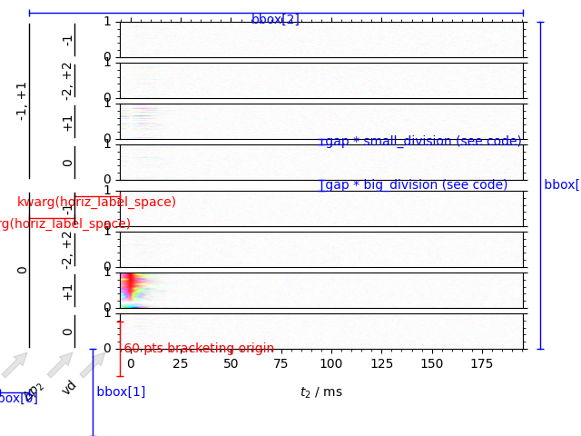

Note
Go to the end to download the full example code
Using the DCCT function¶
Visualize a simulated inversion recovery dataset utilizing the benefits of the DCCT plotting style.
We can image data in both the phase cycling domain, or the coherence transfer domain. Artifacts can clearly be discerned from signal in the coherence transfer domain as well as visualizing the inversion of phase using the domain colored plotting style.
Here, kwargs plotted in red (e.g. vert_label_space) illustrate the kwargs are in display coordinates while kwargs that are in blue (e.g. bbox and LHS_pad) illustrate the kwargs are in figure coordinates
---------- logging output to /home/jmfranck/pyspecdata.0.log ----------
Warning!!! FT clear startpoints is obsolete! use ft_new_startpoint instead
1: Data
from pylab import rcParams
import matplotlib.pyplot as plt
import pyspecdata as psd
from numpy.random import seed
import numpy as np
from numpy import r_
import sympy as s
from collections import OrderedDict
def plot_w_markup(x, y, thistext, thiscolor, thistransf):
if len(np.unique(x)) == 1:
endmarker = "_"
alignment = dict(
ha="left",
va="center",
)
thistext = " " + thistext # make space between vert bar and text
else:
endmarker = "|"
alignment = dict(
ha="center",
va="top",
)
plt.plot(
x,
y,
thiscolor,
marker=endmarker,
linewidth=1,
clip_on=False,
transform=thistransf,
)
plt.text(
np.mean(x),
np.mean(y),
thistext,
color=thiscolor,
clip_on=False,
transform=thistransf,
**alignment,
)
seed(2021)
rcParams["image.aspect"] = "auto" # needed for sphinx gallery
# sphinx_gallery_thumbnail_number = 1
psd.init_logging(level="debug")
# {{{ kwargs for DCCT plot
bbox = [0.05, 0.2, 0.85, 0.75]
horiz_label_spacer = 50
gap = 0.1
# }}}
with psd.figlist_var() as fl:
# provide the symbols that we use for the fake data:
t2, td, vd, ph1, ph2 = s.symbols("t2 td vd ph1 ph2")
echo_time = 5e-3
data = psd.fake_data(
# Give the functional form of the fake data.
# This is an inversion recovery with
# T₁ of 0.2
# T₂* broadening of 50 Hz
# (echo maximum at echo_time)
# amplitude of 21
# resonance offset 100 Hz
21
* (1 - 2 * s.exp(-vd / 0.2))
* s.exp(+1j * 2 * s.pi * 100 * (t2) - abs(t2) * 50 * s.pi),
# next we give our dimensions with outer loops first, as they
# would be acquired on the spectrometer
# (ordering does matter, because fake_data applies a
# time-dependent resonance variation -- see fake_data doc.)
OrderedDict([
("vd", psd.nddata(psd.r_[0:1:40j], "vd")),
("ph1", psd.nddata(psd.r_[0, 2] / 4.0, "ph1")),
("ph2", psd.nddata(psd.r_[0:4] / 4.0, "ph2")),
("t2", psd.nddata(psd.r_[0:0.2:256j] - echo_time, "t2")),
]),
{"ph1": 0, "ph2": 1},
)
# reorder into a format more suitable for plotting
data.reorder(["ph1", "ph2", "vd", "t2"])
fig = fl.next("Data") # Make figure object to place the DCCT
ax_list, trans_dict = psd.DCCT(
data,
fig,
horiz_label_spacer=horiz_label_spacer,
gap=gap,
bbox=bbox,
)
# {{{ add lines indicating kwargs
# {{{ bbox kwargs
plot_w_markup([0, bbox[0]], [0.1, 0.1], "bbox[0]", "b", fig.transFigure)
plot_w_markup(
[0.16, 0.16],
[0.0, bbox[1]],
"bbox[1]",
"b",
fig.transFigure,
)
plot_w_markup(
[bbox[0], bbox[2] + bbox[0]],
[0.97, 0.97],
"bbox[2]",
"b",
fig.transFigure,
)
plot_w_markup(
[0.93, 0.93],
[bbox[1], bbox[1] + bbox[3]],
"bbox[3]",
"b",
fig.transFigure,
)
plot_w_markup(
[-horiz_label_spacer, -2 * horiz_label_spacer],
[0.5, 0.5],
"kwarg(horiz_label_space)",
"r",
trans_dict["transXdispYfig"],
)
plot_w_markup(
[0.0, -horiz_label_spacer],
[0.55, 0.55],
"kwarg(horiz_label_space)",
"r",
trans_dict["transXdispYfig"],
)
plot_w_markup(
[0, 0],
[-30, +30],
"60 pts bracketing origin",
"r",
trans_dict["transDispTranslated"],
)
# }}}
# {{{ gap
ax3_bbox = ax_list[3].get_position()
ax4_bbox = ax_list[4].get_position()
# {{{ this gives the relative size of the divisions between my plots for
# the *specific* example here, where ph1 (outer) and ph2 (inner) are
# the two outermost dimensions
divisions = (
[1] * (data.shape["ph2"] - 1)
+ [2] * (data.shape["ph1"] - 1)
+ [1] * (data.shape["ph2"] - 1)
)
divisions = np.array(divisions) / sum(divisions)
small_division = divisions[0]
big_division = divisions[data.shape["ph2"] - 1]
# }}}
plot_w_markup(
[(ax3_bbox.x0 + ax3_bbox.x1) / 2] * 2,
np.array([ax3_bbox.y1] * 2) + r_[0, gap * big_division],
r"gap * big_division (see code) ",
"b",
fig.transFigure,
)
plot_w_markup(
[(ax4_bbox.x0 + ax4_bbox.x1) / 2] * 2,
np.array([ax4_bbox.y1] * 2) + r_[0, gap * small_division],
r"gap * small_division (see code) ",
"b",
fig.transFigure,
)
# }}}
# }}}
Total running time of the script: (0 minutes 2.125 seconds)